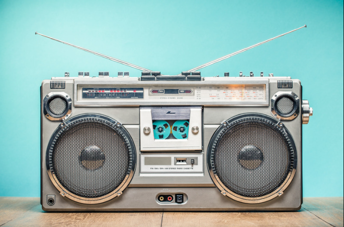

Ondas de Rádio
- Definição:Ondas de rádio são uma forma de radiação eletromagnética que se caracteriza por serem não ionizantes. Elas possuem comprimentos de onda longos e são utilizadas em diversas aplicações tecnológicas.
- Frequência e Comprimento:As ondas de rádio têm baixa frequência e alto comprimento de onda, variando entre 3 kilohertz (3 kHz ou 3 x 103 Hz) e 300 gigahertz (300 GHz ou 300 x 109 Hz).
- Aplicação: Usadas em telecomunicações, sensores de movimento, TV, auto falante, transmissão de dados, câmaras de segurança, comunicações sem fio, detecção de objetos, microfone, satélite, ultrassonografia,implantes de marcapasso,ressonância magnética, radioterapia, Wi-Fi, controle remoto, rádio, localização por GPS e celular.
- Efeito: As ondas de rádio promovem a oscilação de elétrons livres, como em antenas, permitindo a transmissão e recepção de sinais. Esse princípio é fundamental para o funcionamento de diversos dispositivos eletrônicos.
Aplicações:
